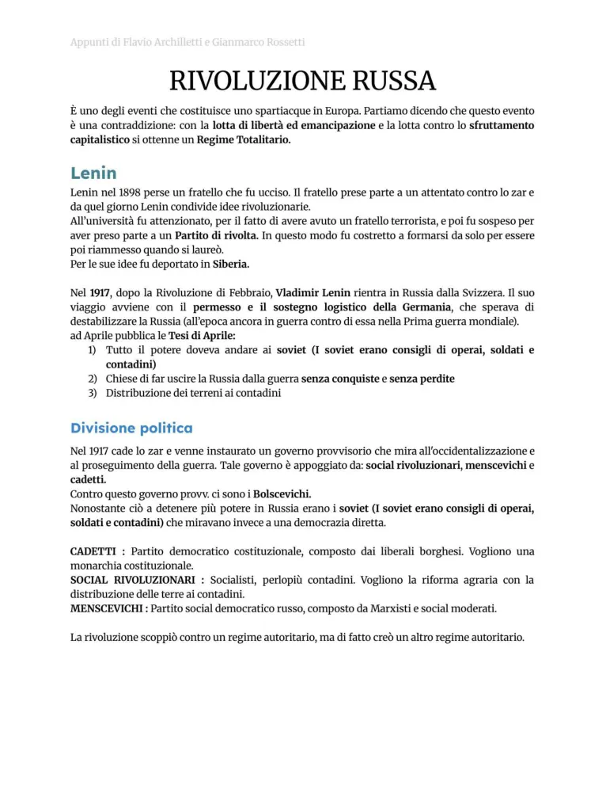
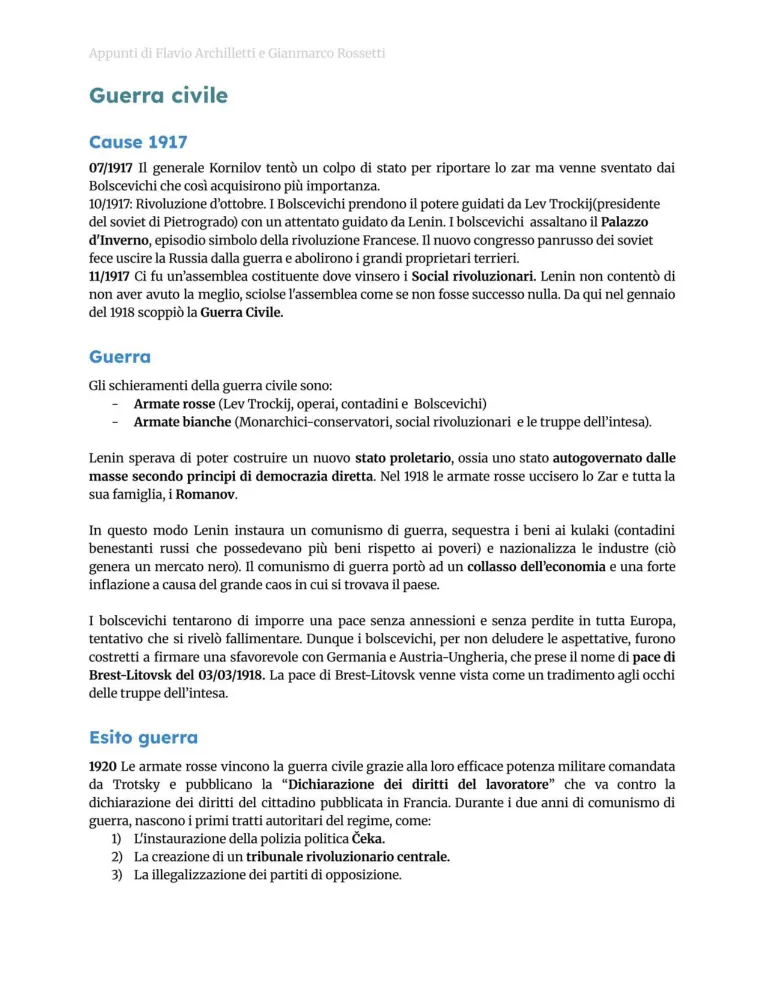

Rivoluzione russa e guerra civile
Crollo dello zarismo, Lenin, bolscevichi, guerra civile e nascita del potere sovietico.
Studio guidato
Crisi dello zarismo
La Russia zarista presenta arretratezza economica, disuguaglianze sociali, repressione politica e difficoltà militari. La Prima guerra mondiale aggrava fame, crisi e sfiducia verso Nicola II.
Febbraio 1917
La rivoluzione di febbraio porta all’abdicazione dello zar e alla nascita di un governo provvisorio. Accanto ad esso agiscono i soviet, consigli di operai e soldati.
Lenin e ottobre
Lenin rientra in Russia e propone pace, terra e potere ai soviet. Nell’ottobre 1917 i bolscevichi prendono il potere e avviano un nuovo regime rivoluzionario.
Guerra civile
La guerra civile contrappone Armata Rossa e Armate Bianche. Il potere bolscevico usa controllo politico, requisizioni e comunismo di guerra per sopravvivere.
Nuovo Stato
Dopo la guerra civile vengono introdotte la NEP e poi nasce l’URSS nel 1922. La morte di Lenin apre il conflitto per la successione tra Stalin e Trotsky.
Parole chiave
Pagine originali dal file
Le immagini sotto mantengono il riferimento diretto alle pagine del PDF usato come base del sito.


Quiz finale
Devi rispondere correttamente a tutte le 12 domande. Se ne sbagli anche solo una, il quiz si azzera e ricomincia da capo.